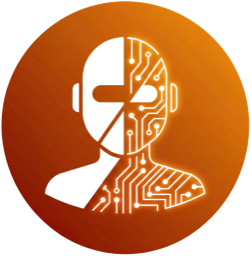

MCP 허브AI ROASTING
/
GitHub ↗
Signal router for AI · MCP catalog
AI에 연결할 수 있는
AI에 연결할 수 있는
모든 것을 한 곳에서.
MCP는 AI를 외부 데이터·서비스에 연결하는 표준 규격입니다. 국내 공시·법령부터 미국 SEC 공시까지, 비즈니스 리더에게 필요한 커넥터를 검증해 모았습니다.
자주 찾는
0connectors
10 categories
구분
바로 사용 · 설치하면 즉시 동작
로그인만 필요 · 서비스 계정으로 인증
API 발급 필요 · 무료 키 신청 후 사용